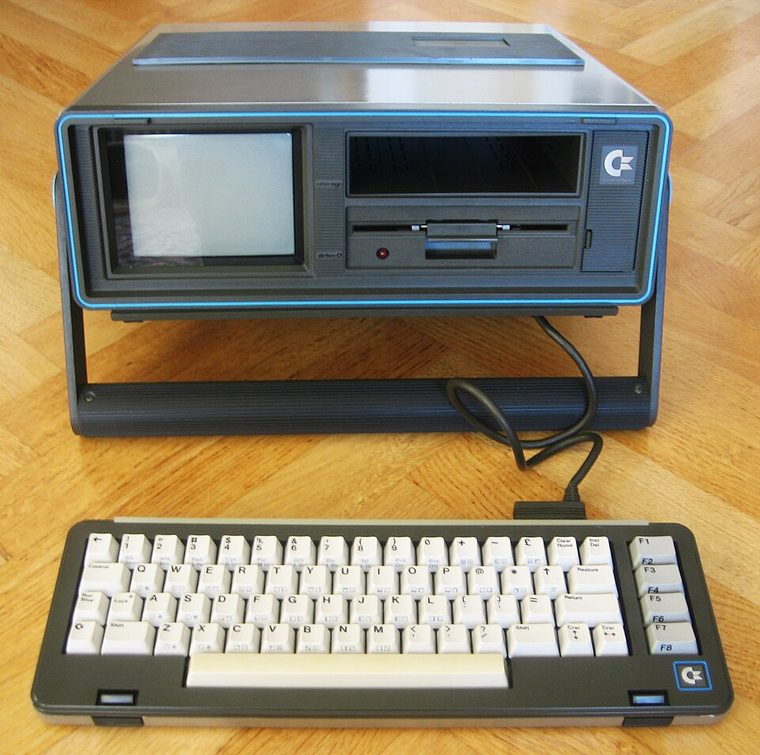

[ IDENTIFIED SYSTEM // COMMODORE SX-64 ]
Commodore SX-64 Portable Computer Enclosure
Suitcase-style portable with integrated 5-inch color CRT, detachable keyboard and one internal 5.25-inch disk drive; approx. 14.5 × 12.5 × 7.5 in.

MODEL / REVISION BOUNDARY: SX-64 board and drive revisions vary. Do not confuse it with Commodore 64 desktop cases, prototype dual-drive DX-64, or PAL-region modified machines.
Enclosure specifications
| Exact model / generation | Commodore SX-64 (Executive 64), 1983 portable all-in-one; distinguish the North American SX-64 from DX-64 prototypes and later regional variants. |
|---|---|
| External dimensions | About 14.5 × 12.5 × 7.5 in (W × H × D, approximate cabinet envelope); handle and feet affect carry/shipping dimensions. |
| Form factor / board layout | Portable suitcase all-in-one enclosure; metal chassis, CRT and keyboard storage cavity with model-specific Commodore board and drive mounting. |
| Proprietary power supply | Internal mains power supply with separate CRT/logic supply paths; proprietary SX-64 harness and board layout, not an ATX PSU. Preserve regional mains and fuse arrangement. |
| External bays / ports | No standardized PC bay. Rear user I/O, cartridge, serial and video connectors are system ports; external peripherals require their own cases and cables. |
| Internal bays / mounts | One built-in 5.25-inch 1541-compatible disk mechanism; no open standard bay. Drive mechanism and mounting belong to the SX-64 assembly. |
| Service / compatibility | Use the SX-64 technical manual for unit-specific schematics and parts. CRT and mains supply retain hazardous voltages; trained service only, with the exact revision/service precautions. |
| Revision identification | SX-64 board and drive revisions vary. Do not confuse it with Commodore 64 desktop cases, prototype dual-drive DX-64, or PAL-region modified machines. |
Service, restoration & fit notes
Use the SX-64 technical manual for unit-specific schematics and parts. CRT and mains supply retain hazardous voltages; trained service only, with the exact revision/service precautions.
Internal mains power supply with separate CRT/logic supply paths; proprietary SX-64 harness and board layout, not an ATX PSU. Preserve regional mains and fuse arrangement.
- Record the full model/type label, board and power-supply assembly numbers, drive labels and manual revision before disassembly.
- Preserve original shields, brackets, hinges, feet, keyboard/CRT harnesses and proprietary fasteners with this exact enclosure; do not assume contemporary PC standards apply.
- Dimensions are approximate where noted; measure the actual specimen and leave clearance for cables, vents, lids/handles and attached peripherals.
Manufacturer & archival manual citations
- Commodore Computer Technical Manual, Model SX-64 — Internet ArchiveCommodore model-specific technical/service manual with diagrams and subsystem documentation.
- Commodore SX-64 User’s Guide (1983) — Internet ArchiveContemporary operator documentation for the SX-64 portable.
Manuals may cover only a stated revision or configuration; compare the title page and machine labels before applying procedures.